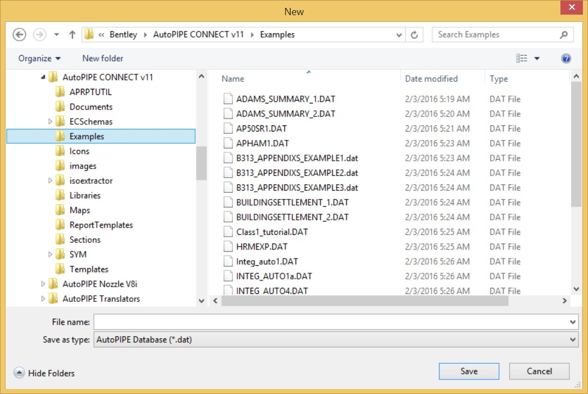
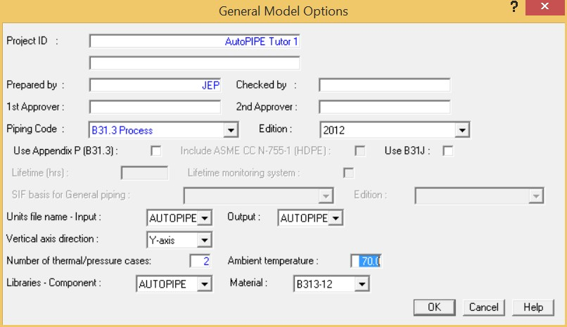

Creating a New System
When a new system is created, AutoPIPE automatically presents a series of dialogs that allow you to establish the piping code, pressure and temperature loads, pipe materials, and other factors. This section guides you through the completion of each of these dialogs.
| Note: |
Before beginning this exercise, you may want to create a directory on your local drive where the tutorial model can be saved. |
-
- Select File > Model > New.
- The New dialog is displayed. Navigate to the Examples directory, type TUTOR1 in the File Name
field, then press Save.

| Note: |
If the Project Chooser dialog displays, prompting you to assign the model to a project, simply press Cancel. By default, the file is saved in the same directory where AutoPIPE is installed. If you prefer, save the tutorial model in a separate directory. |
-
- The General Model Options dialog is automatically displayed. For the first tutorial model, let’s
discuss some of these areas in detail. First, input the following values:
-
-
- Project ID: AutoPIPE Tutorial 1
- Prepared by: {your initials}
-
| Note: |
The values you input in these two fields will appear in the headers of reports that are generated on the system. |
-
- AutoPIPE filters many of its dialogs based on the Piping Code to ensure code compliance and to help you properly identify various elements of the system. Select B31.3 Process from the Piping Code selection list (press the down arrow next to the field to open a list of the available codes).
- Select 2012 from the Edition selection list.
- Notice the Vertical Axis Direction field. AutoPIPE models are constructed in three-dimensional space, which means that you must be aware of three direction vectors. By default, the vertical axis will be set to the Y-axis. However, if you’d like to customize the vector that is considered to run in the vertical plane, you could change this value. For our model, accept the Y-axis default.
- The next field of interest is the Number of Thermal/Pressure Cases. In order to define two thermal/pressure cases for analysis, input a value of 2 in this field.
- There are several methods for navigating within AutoPIPE dialogs. You can use the mouse to position the cursor in a field, or press Tab to jump to the next field in sequence. For example, press Tab now to jump to the Ambient Temperature field, which contains a value of 70°F
{21.1°C}. After this field is highlighted, examine the status bar at the bottom of the AutoPIPE application window. The lower right hand corner will always display the units associated with the active field. In this case, the status field reads deg F. A brief glance at the Units area of the status bar will always help you to confirm the units associated with the active field. Accept the default Ambient Temperature value of 70 {21.1}.

-
- Press OK to close the General Model Options dialog and display the Segment dialog.
- The Segment dialog allows you to assign a name and starting location for the first pipe segment to be placed in the model. Accept the (0,0,0) global coordinate default for the first segment (A). The next step is to assign a Pipe Data Identifier to this segment. A set of pipe properties can be defined and associated with a named ID. It is a good idea to choose a meaningful pipe identifier name such as the first few letters of a line ID or a descriptive name. In our example, we will use 12”STD {300STD} to indicate a 12"{300mm} nominal, standard schedule wall thickness. Input 12"STD in the Pipe data identifier field.
-
- Press OK to display the Pipe Properties dialog.
-
- Note that 12”STD automatically appears in the Pipe Identifier field of this dialog. These properties will be associated with all components associated with the 12”STD {300STD} line.
| Note: |
During creation of the model, you can define a new segment and give it a new Pipe Identifier. Doing so will re-display the Pipe Properties dialog for the definition of the new pipe. |
-
- Specify the size of the pipe by selecting 12.000 {300} from the Nominal Diameter selection list.
- Enter 1 {25} in the Insul Thickness field.
- From the Insul Material field, select Calc for calcium silicate. After the insulation material is selected, the dialog is automatically populated with insulation density values. AutoPIPE contains a list of these definitions in its default libraries. If desired, you can override these values manually.
- From the Pipe Material field, select A106-B carbon steel type. As with the Insulation Material, AutoPIPE will automatically populate the material properties and stress allowables based on the definitions in the library.
| Note: |
If a material is requested which is not in the library, the procedure would be to select NS (for Non-Standard), then define the material property values manually. |
-
- Press OK to close the Pipe Properties dialog. The Operating Pressure & Temperature dialog is automatically displayed. Note that two columns are available for input in this dialog. This is because you entered “2” in the Number of Thermal/Pressure cases field (from the General Model Options dialog). Input 350 (psi) {2.4 n/mm2} in the Case 1 Pressure field, then Tab to the Case 1 temperature and input 20 {-5° C}. After the Case 1 Pressure/Temperature values have been specified, Tab to define the values for Case 2. Input a Case 2 Pressure of 350 {2.4} and a temperature of 550 {285}.
-
- When the dialog appears as shown above, press OK.
- The properties of the system and starting segment have now been defined. Notice that a marker ( + ) has been placed at the (0,0,0) starting point named A00.